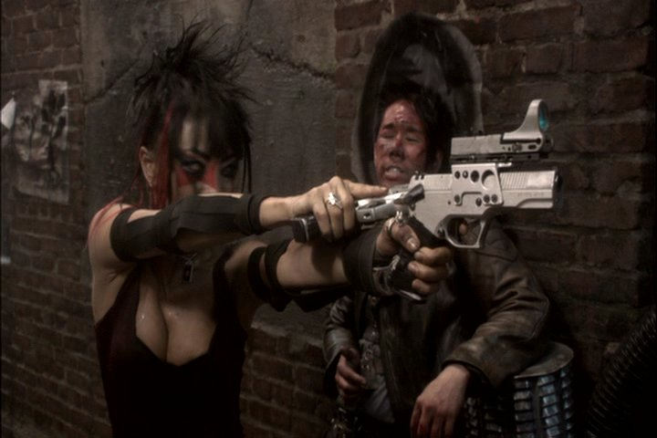
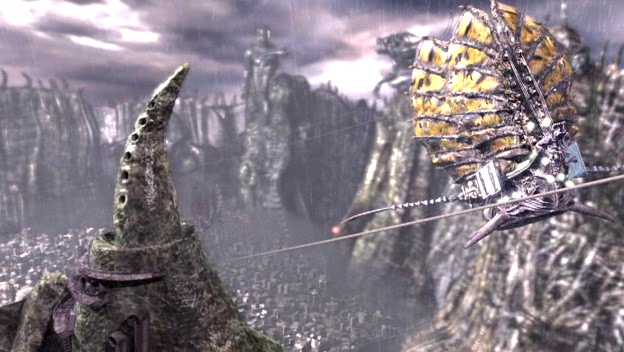
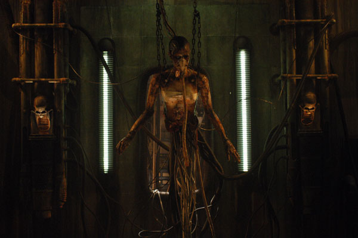
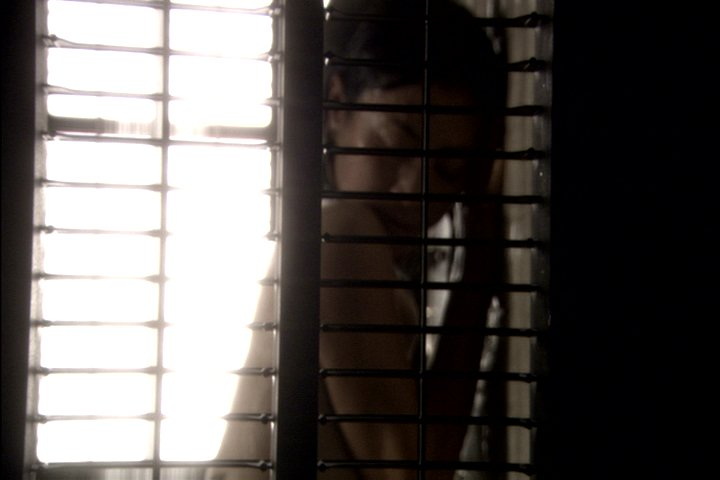

Movie review by : Mr. Roboto
Year : 2007
Directed by : Pearry Teo
Written by : Pearry Teo & Keith Collea
Degree of Cyberpunk visuals : High
Correlation to Cyberpunk themes : Medium
Rating : 6/10
Key cast members :

"It's like whatever path we choose in this life, this generation has been set up to extinguish itself." - Christian
Overview: One of several DVDs I have that I've been trying to get to reviewing, The Gene Generation follows the path taken by Ultraviolet and the live-action Aeon Flux with a gun-totting, leather clad femme fatale working for the government or some group-entity to bring law and order or some justice to a dystopic future. This time around, Bai Ling is carrying the guns, and if you've ever seen her photos on the nets, you'll definitely love her guns.
The rest of the movie, maybe not so much. Not exactly Ghost in the Shell/Matrix/Blade Runner quality level, but certainly a better way to waste 90 minutes of free time. Plus you'll get to hear aggrotech act Combichrist when they were at their peak with ditties like Get Your Body Beat.
The Story: Olympia, Washington, US: Hayden Technologies creates the Transcoder, a glove-like device that manipulates DNA to heal... or kill. A Transcoder accident pollutes Olympia, forcing authorities to construct a "wall" around the city to insure that the pollutant does not leave, but the people want to.

To leave, people need to undergo DNA screening to insure that they are not contaminated. This gives rise to the practice of "DNA hacking:" Using a clone of the transcoder and a sample of a clean person's DNA, a hacker could re-sequence to clean his own DNA, while the "donor" was killed of due to genetic mutation. The government hires assassins to take out the hackers.
Michele is an assassin who is trying to save money from her jobs to get out of Olympia. Unfortunately, her efforts are hindered by her own brother, Jackie, whose drinking and gambling has forced him to take the money in order to pay off a brutal loan shark. Desperate for money, Jackie breaks into Christian's apartment and takes the transcoder, unaware of what it is. Michele must now track down the transcoder, save her brother from the loan shark, and protect Christian from those looking for him and the transcoder.

Tentacle porn much? When I first announced that I was going to review this movie, I was told that it wasn't and easy watch. Being a cyberpunk movie, I knew that certain aspects would be a potential turn-off. There is blood... lots of blood flowed throughout, but that was expected. What wasn't expected was how the transcoder killed people: The target's DNA was mutated to create tentacles that erupted from within, bursting out of the mouth, ears, nose, and wherever there was a break in the skin. What has been seen...
Fortunately, all the blood, sweat, and city grime makes Michele take showers frequently:

Definitely worth an extra star in my book.
On the downside, a sex scene between Michele and Christian is intermixed with Jackie being beaten by Randall's henchmen. Do not want.
Conclusion: Difficult to watch, they said. Well, not TOO difficult for me, even with the tentacle violence. Hopefully you're not too squeamish about tentacles. At least Bai Ling's eye-candy makes it worthwhile. The rest is on par with Ultraviolet and Aeon Flux (2005), so those who love kick-ass babes will definitely get a kick out of Gene Generation.